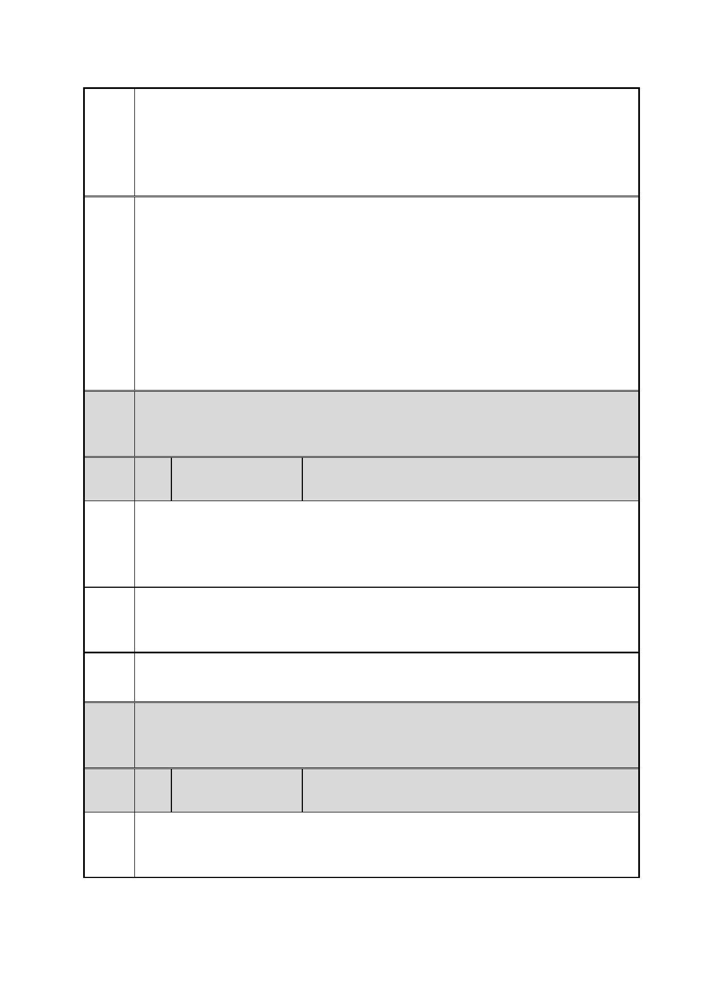

臺北市都市計畫委員會 公民或團體陳情意見綜理表
案
名
市府
回應
委員
會議
決議
編
號
陳情
理由
建議
辦法
市府
回應
委員
會議
決議
編
號
陳情
理由
「變更臺北市信義區逸仙段二小段 33 地號等 21 筆土地（原臺北機廠）
工業區為創意文化專用區、特定專用區、道路及綠地用地主要計畫案」
及「擬定臺北市信義區逸仙段二小段 33 地號等 21 筆土地（原臺北機
廠）創意文化專用區、特定專用區、道路及綠地用地細部計畫暨劃定
都市更新地區計畫案」
一、有關臺北機廠再利用之定位，同編號 2 市府回應內容。
二、有關保留西露天吊車之建議，查西露天吊車非屬市府公告文化資
產內容；惟依西露天吊車形式，為金屬製框架結構設施，設施結構與
應保留東露天吊車類似。依細部計畫內容，特定專用區(一)內留設寬
度 20 公尺基地內通路，與西露天吊車位置相當，依說明書附圖 6 基
地通路斷面設計參考圖，該通路供車行使用寬度僅 8 公尺，餘皆留設
為帶狀式開放空間(含自行車道、綠化植穴、人行道、裝卸格位、大
客車臨停區)，因此，西露天吊車仍可納入該通路進行整體設計予以
原地保留。
內容同編號 1。
16 陳情人
林○君
一、家在綠地下方，特三左邊 553 巷 52 弄那排，目前仍是工業區住
宅。
二、可否增加綠地保障。
三、居民回饋增加。
一、臺北機廠工業區轉開發時，可否將我們這區的住宅一併改為住宅
區，去掉工業區。
二、我要開會，請通知我。
本計畫南側私有工業區位於本計畫範圍外，依專案小組第二次會議審
查意見另案循法定程序辦理都市計畫變更。
內容同編號 1。
17 陳情人
何○仙
家位於 52 弄靠臺北機廠之工業區，請於改變都更時，將此塊地改為
一般住宅區，因都更臺北機廠後，沒理由只剩這麼小塊地仍是工業
區，共約 60 戶左右。
第 28 頁/共 154 頁